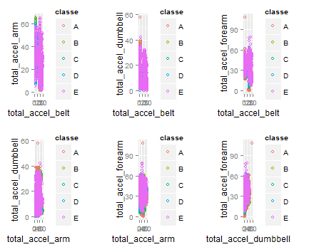

Coursera Practical Machine Learning Project Work
Weight Lifting Exercises Prediction
Author: Vijin K P
Steps/Analysis
1. Removed irrelent features which donot enough data.
2. Plotted total_accel_belt,total_accel_arm, total_accel_arm_dumbell, toatl_accel_forearm with one another and observed the variation.

3. Also found the correlation between the the features.
4. Created training model with random forest classifier.
Classifier:
Random Forest
19622 samples
52 predictor
5 classes: 'A', 'B', 'C', 'D', 'E'
No pre-processing
Resampling: Cross-Validated (10 fold)
Summary of sample sizes: 17660, 17660, 17659, 17661, 17660, 17659, ...
Resampling results across tuning parameters:
mtry Accuracy Kappa Accuracy SD Kappa SD
2 0.9956680 0.9945202 0.0008752622 0.001107394
27 0.9950053 0.9936817 0.0014389425 0.001820688
52 0.9898069 0.9871056 0.0022811810 0.002886015
Accuracy was used to select the optimal model using the largest value.
The final value used for the model was mtry = 2.
5. Achieved 100% accuracy with test data.